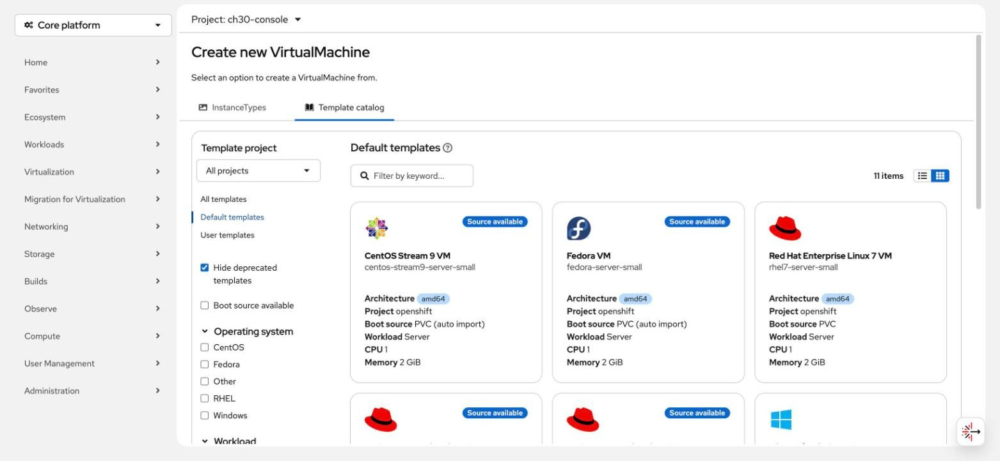
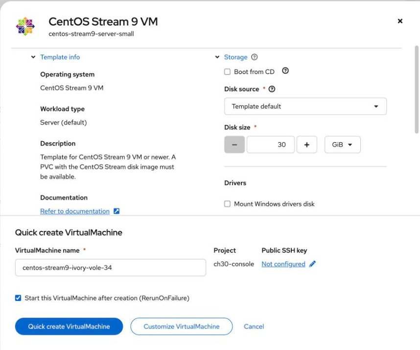
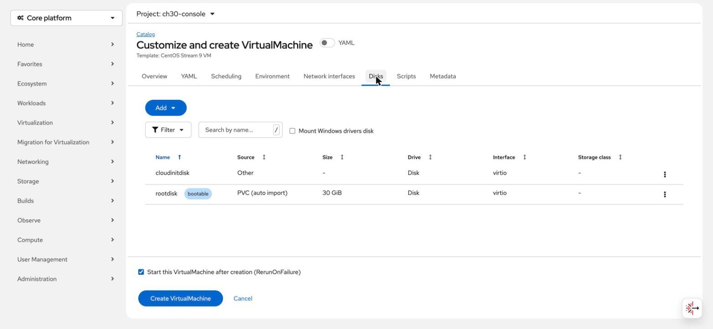
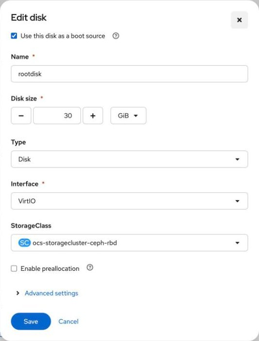

What a VM is made of on ROVS
By the end you can read a VM's definition, say what each part does, and spot the two settings that catch out people coming from vSphere.
Northgate Freight is moving off vSphere. The company is made up; the VM and its output are real. Before they move a single VM, their admins want to understand one properly. This is that one.
Every screenshot, definition and line of output in this unit comes from a real run on a test cluster, recorded in tutorial chapter 30.
One VM, six parts
On ROVS a VM is a text definition. Select a part of the drawing to see what it does and which lines define it. You can also click a line.
Identity
Names the VM and the project (namespace) it lives in. Its disk, its launcher pod and every other piece are created in the same project.
From vSphere: like naming a VM and choosing its resource pool when you deploy from a template.
Power
Sets the power behaviour. Always starts the VM and restarts it if it stops.
From vSphere: Always is roughly a VM with an HA restart policy.
Watch for this. There are five values. One of them, Once, never restarts the VM, even after a node failure.
Compute
The virtual hardware. The guest sees sockets × cores × threads vCPUs, and the guest memory you set.
Watch for this. The chipset is not in this file. The cluster writes its default in; the stored VM said pc-q35-rhel9.6.0. Leave it out so your VMs follow the cluster default.
Guest setup
A small disk that cloud-init in the guest reads at first boot to set the user, password, SSH keys and network settings.
Watch for this. This one sets a password and no SSH key. Remember that in step 2.
Boot disk
Cloned from a golden image (a DataSource) into a new disk volume (a PVC). The disk belongs to the VM: delete the VM and the volume goes too.
From vSphere: the golden image is like a template in a content library. The virtio bus is the paravirtual disk, like VMware Paravirtual SCSI.
Watch for this. ReadWriteMany plus Block is what makes this disk live-migratable. The virtualization storage class supports both.
Network card
One network card on the cluster's pod network. The VM gets a cluster-internal address, and traffic to outside networks is NAT'd through the node (masquerade).
From vSphere: the virtio model is the paravirtual NIC, like VMXNET3.
Watch for this. To connect a VM directly to a VPC subnet you use a localnet or Layer 2 network instead. That is Module 3.
apiVersion: kubevirt.io/v1
kind: VirtualMachine
metadata:
name: my-first-vm
namespace: my-project
spec:
runStrategy: Always
dataVolumeTemplates:
- metadata:
name: my-first-vm
spec:
sourceRef:
kind: DataSource
name: centos-stream9
namespace: openshift-virtualization-os-images
storage:
storageClassName: ocs-storagecluster-ceph-rbd-virtualization
accessModes:
- ReadWriteMany
volumeMode: Block
resources:
requests:
storage: 30Gi
template:
spec:
domain:
cpu:
cores: 1
sockets: 1
threads: 1
devices:
disks:
- disk:
bus: virtio
name: rootdisk
- disk:
bus: virtio
name: cloudinitdisk
interfaces:
- name: default
masquerade: {}
model: virtio
rng: {}
memory:
guest: 2Gi
networks:
- name: default
pod: {}
volumes:
- dataVolume:
name: my-first-vm
name: rootdisk
- cloudInitNoCloud:
userData: |
#cloud-config
user: centos
password: my-password
chpasswd: { expire: False }
name: cloudinitdisk
Create the VM, then look at it
Run each command in turn. The output is what the test cluster returned for this exact definition.
oc apply -f my-first-vm.yaml
virtualmachine.kubevirt.io/my-first-vm created
# about 40 seconds later
oc get vm,dv,pvc,vmi -n my-project
NAME AGE STATUS READY virtualmachine.kubevirt.io/my-first-vm 37s Running True NAME PHASE PROGRESS RESTARTS AGE datavolume.cdi.kubevirt.io/my-first-vm Succeeded 100.0% 38s NAME STATUS CAPACITY ACCESS MODES STORAGECLASS persistentvolumeclaim/my-first-vm Bound 30Gi RWX ocs-storagecluster-ceph-rbd-virtualization NAME AGE PHASE IP NODENAME virtualmachineinstance.kubevirt.io/my-first-vm 39s Running 172.17.1.200 kube-...-00000167
Running in under 40 seconds.
RWX, Block, and the virtualization storage class: this disk can live-migrate.
172.17.1.200 is a cluster-internal pod network address.
# the chipset
oc get vm my-first-vm -n my-project -o jsonpath='{.spec.template.spec.domain.machine.type}'
pc-q35-rhel9.6.0
Nobody typed this. The cluster filled in its default chipset.
Before you run the next command: will virtctl ssh log you in to this VM? Look back at Guest setup.
Show the answer
The guest setup sets a password and no key, and CentOS Stream 9's SSH server has password login turned off for cloud images. Use virtctl console for this VM, or put a key in the guest setup.
virtctl -n my-project ssh centos@vm/my-first-vm
Received disconnect from UNKNOWN port 65535:2: Too many authentication failures
No key, no SSH. Use the console instead.
Make the same VM in the web console
These are real screens. Click where you would click. After two misses the right place is marked.

Northgate wants a CentOS VM. Pick the right template.
Show where
Right. The CentOS Stream 9 VM card. It carries a Source available label.

You need to change the boot disk's storage class. Which button lets you?
Show where
Right. Customize VirtualMachine. It lets you change the storage class, CPU, memory or network before you create the VM.

Open the editing menu for the boot disk.
Show where
Right. The menu at the end of the rootdisk row, then Edit.

One field here holds the wrong value for a VM. Click it.
Show where
Right. The console offered ocs-storagecluster-ceph-rbd, the generic class. Set it to ocs-storagecluster-ceph-rbd-virtualization, then click Save.
Pick an answer, then see what really happened
A worker node fails. Your VM's power setting is runStrategy: Once. What happens to the VM?
Show the answer
Once means once.Once runs the VM one time and never restarts it, whether it finished cleanly or failed. Always is the one that restarts it, much like a vSphere HA restart policy.
You click Create VirtualMachine for a CentOS VM with a 30 GiB boot disk. How long until it is running?
Show the answer
2 seconds for the disk!On the test cluster the disk clone finished in 2 seconds, and the VM was running 18 seconds after the click. The disk is a CSI snapshot clone of the golden image, which is why 30 GiB is ready in seconds rather than minutes.
Three questions
Which disk settings make this VM's disk live-migratable?
Show the answer
ReadWriteMany plus Block is what makes the disk live-migratable. The virtualization storage class supports this out of the box.
The VM got the address 172.17.1.200. Where does that address come from?
Show the answer
The network card is on the pod network, so the VM gets a cluster-internal address, and traffic to outside networks is NAT'd through the node. Connecting a VM directly to a VPC subnet takes a localnet or Layer 2 network, which Module 3 covers.
You inherit 200 VMs. How do you find the ones whose disks are on the generic storage class?
Show the answer
The generic class offers the same access modes, so checking access mode will not tell them apart. The name will: ocs-storagecluster-ceph-rbd is generic, ocs-storagecluster-ceph-rbd-virtualization is the one for VMs.
You can read a VM now
Six parts. Disks on the virtualization storage class. Once never restarts. No key, no SSH.
Tutorial chapter 30, Create your first VM on ROVS, runs everything you just saw.